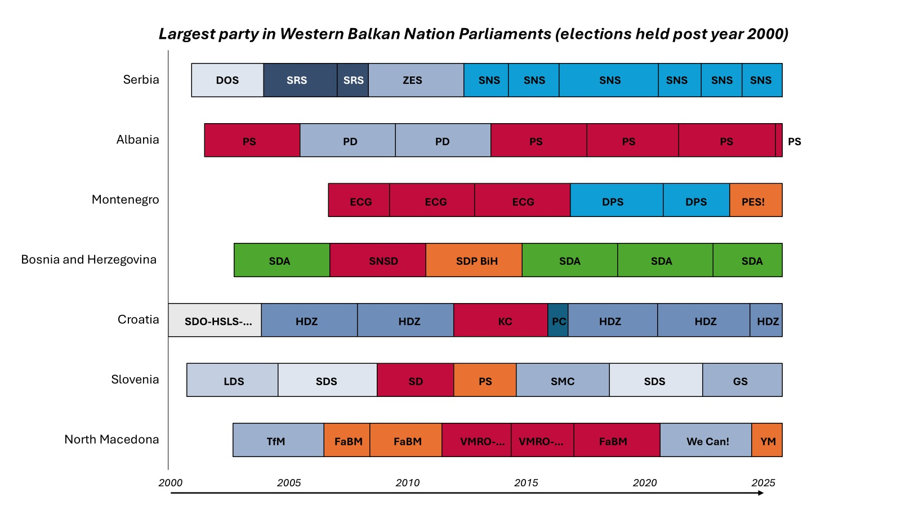

Political Analysis:
Serbian Politics August 2025

Above: Serbian citizens leave Slavija, student rally on 28 June 2025
Over the past three and a half decades, European states have weathered a succession of crises. From the financial chaos following the global financial crash, to the migrant crisis of the mid-2010s, and the exit of the UK from the European Union, all Governments across the continent have been tested and some even collapsed.
The political consequences have been profound, from the rise and fall of parties such as Podemos and Syriza, and the electoral decimation of the UK’s Tories in the 2024 general election.
Yet amidst the turbulence, certain leaders and administrations have displayed striking resilience. Few illustrate this better than Aleksandar Vučić, who has risen from Minister of Information under Slobodan Milošević to Prime Minister and now President of Serbia. With Serbia a candidate for EU accession, it’s worth analysing the dynamics of Vučić’s rule as a means to understand this Western Balkan nation.
Coming to power as Prime Minister in 2014 and president in 2016, he has outlasted David Cameron and Boris Johnson, served a longer time in office than Macron, and by the end of his current term will have completed 14 years at the forefront of Serbian politics.
The collapse of the Novi Sad train canopy and the wave of student-led protests that followed have generated speculation in Western media about Vučić’s potential downfall. The protest against the Government on March 15 2025 was the largest in Serbia’s history, likely larger than those preceding Milosovic’s downfall.
However, despite the current challenge to the rule of his Serbian Progressive Party (SNS) there is little indication that he will be forced to resign or even have his hand forced to call a new election. (poll details)
Since 1990 there have been examples of long-lasting and stable administrations in Europe, such as the Labour Government in the UK between 1997 and 2010, Angela Merkel’s CDU (Madame Merkel indeed seems to be the longest serving European leader during this period).
There have also been examples of extended tenures of administrations through crises where collapse seemed imminent. Consider Britain: after the financial crash, the Conservatives emerged as the dominant party not only by outmanoeuvring the Liberal Democrats during the 2010–15 coalition, but also by facing a Labour Party that struggled with internal divisions. Even the turbulence of Brexit did not prevent the Conservatives from winning the largest share of seats in both 2017 and 2019.
Diagram above: A number of parties, such as SNS and the socialist party of Albania have been the largest constituent elements of Western Balkan Parliaments in recent years.
How is it that some of these Government have been able to retain power? In many cases, survival may be sometimes attributed to the absence of a credible opposition despite government performance.
Serbia’s opposition has long failed to capitalise on the SNS’s vulnerabilities. Western media often attribute this to restrictions on press freedom and political intimidation. These are real concerns. Student leaders, for example, recently defended an activist whose OnlyFans details were used against her in a live media smear by the editor of the Informer, a pro-Government tabloid.
The student organisations behind recent unrest have been clever in this space. They have avoided political symbols, including European Union flags, to mitigate accusations of foreign manipulation. In many rallies, only the Serbian national flag could be seen. Additionally, they have rejected central leadership to avoid being branded as agents of a “colour revolution.” These tactics have helped preserve legitimacy on the streets, but at the cost of building a coherent alternative political alternative to the incumbents.
A complex, challenging picture emerges for citizens from this dynamic. Becoming credible opposition to the governing elite is challenging, and evolution into a political force would mean being subjected to mud-slinging, intimidation and various other forms of being discredited and demonised.
On the international stage, European partners are looking on nervously. While the SNS has credibly committed to shepherding Serbia into the EU, officials such as Marta Kos must balance encouraging alignment with the acquis communautaire while not losing face as the world decries Serbia’s democratic backsliding on European fundamentals.
The FT’s editorial board recently went as far as to call out Western inaction, noting that if leaders do not put more pressure on Vucic “and Serbia heads further down the authoritarian path, it will be not just Vučić but also his gaze-averting western backers who are to blame.”
What exactly would address the situation? Some commentators believe elections are necessary, but as things stand would likely lead to a repeat SNS victory. This doesn’t seem likely to defer civil unrest in a country which has had more elections and shorter-lived parliaments than any other western balkan nation.
Time between completed electoral cycles, select European countries
| Country | Number of completed elections since the year 2000 | Average number of calendar days between elections |
|---|---|---|
| Serbia | 8 | 911.8 (2.5 years) |
| North Macedonia | 7 | 1129.4 (3.1 years) |
| Montenegro | 5 | 1223.6 (3.4 years) |
| Croatia | 6 | 1241.3 (3.4 years) |
| Slovenia | 5 | 1294.6 (3.5 years) |
| Germany (federal) | 6 | 1365.0 (3.7 years) |
| UK | 6 | 1404.7 (3.8 years) |
| Albania | 6 | 1451.3 (4.0 years) |
| Bosnia & Herzegovina (federal) | 5 | 1460.4 (4.0 years) |
| Italy | 5 | 1561.0 (4.3 years) |
| France | 5 | 1611.4 (4.4 years) |
| Average time in days between elections | 1308.3 (3.6 years) | |
Judging by recent Serbian political history, preserving the status quo doesn’t seem like a viable option to much of Serbian society, neither does significant external pressure from international partners (which would likely evoke memories of NATO’s unlawful intervention during the Yugoslav wars. It seems that the only agent capable of shaping Serbia’s politics would be the SNS itself.
If it were to become a vanguard against political intimidation and institutional wing-clipping of political agents, the Vucic’s SNS could begin to shape the political scene for the better. This would amount to a policy of turning the other cheek, empowering independent, citizen-led institutions to monitor and sanction those who don’t play by the political rules, and creating the conditions for an opposition to emerge.
Such a decision would be a bold one to take, and require some mettle. There are few actors who could have the clout to pursue this, such as Ana Brnabic. However the only one who has the credibility across the SNS to do so is Vucic himself.
Government longevity is not merely a function of performance or legitimacy, it can, in extremis, be a continuation of a status quo due to a lack of viable opposition. The absence of a credible opposition is arguably the main reason that Vučić’s SNS continues to hold power.
A chess champion himself, Vučić may have at some point wished for a challenger of equal standing to defeat in a fair match. Now, with his commitment to not serving another term once this one expires, he aspires to leave a successful EXPO 2027 as his legacy.
Perhaps, fostering and shepherding Serbia’s political environment from one of vindictive and aggressive mudslinging would be a greater legacy; turning Serbia into a robust, modern and principled democracy. For now, this seems a remote possibility.